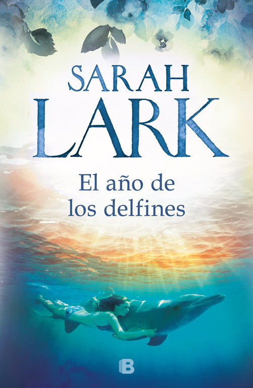
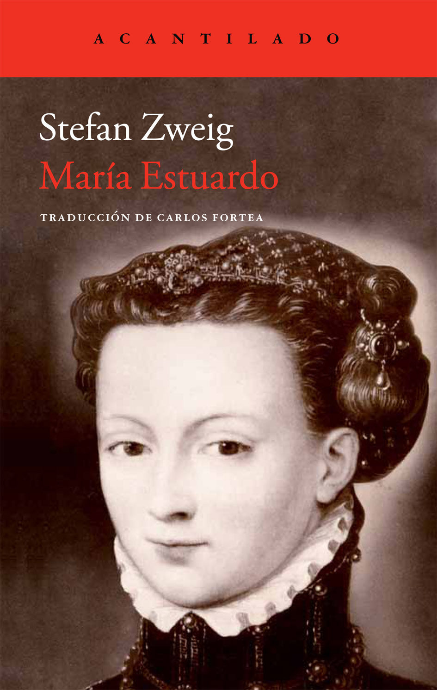

Libro 1
-

Precio: 20.81€
Autor: SARAH LARK
Sinopsis: La nueva novela de la exitosa escritora Sarah Lark que nos relata la gran aventura vital de Laura, una madre de familia todavía joven, que quiere cumplir su sueño de convertirse en bióloga marina y para ello, no duda en embarcarse en un apasionante viaje desde Alemania hasta el país de la nube blanca para trabajar como guía en una empresa turística especializada en cruceros para atisbar ballenas y delfines.
Libro 2

Precio: 17€
Autor: Elísabet Benavent
Sinopsis: Elísabet Benavent vuelve con una propuesta diferente que aborda las contradicciones de un grupo de amigos que se ve obligado a mentir para dejar de sentir. Un road trip divertido, surrealista, donde todo puede suceder. Una aventura en carretera que habla de la verdad que se esconde detrás de todas las mentiras.
Libro 3
-

Precio: 24.70€
Autor: STEFAN ZWEIG
Sinopsis: María Estuardo es uno de los personajes más enigmáticos y apasionantes de su tiempo. Educada en Francia, refinada, culta y hermosa, su adhesión al catolicismo en la turbulenta época de las revueltas protestantes, la complicada política sucesoria en Inglaterra así como la fragilidad política del reino de Escocia convirtieron a María en una traidora intrigante y en una santa de la Iglesia católica al mismo tiempo.